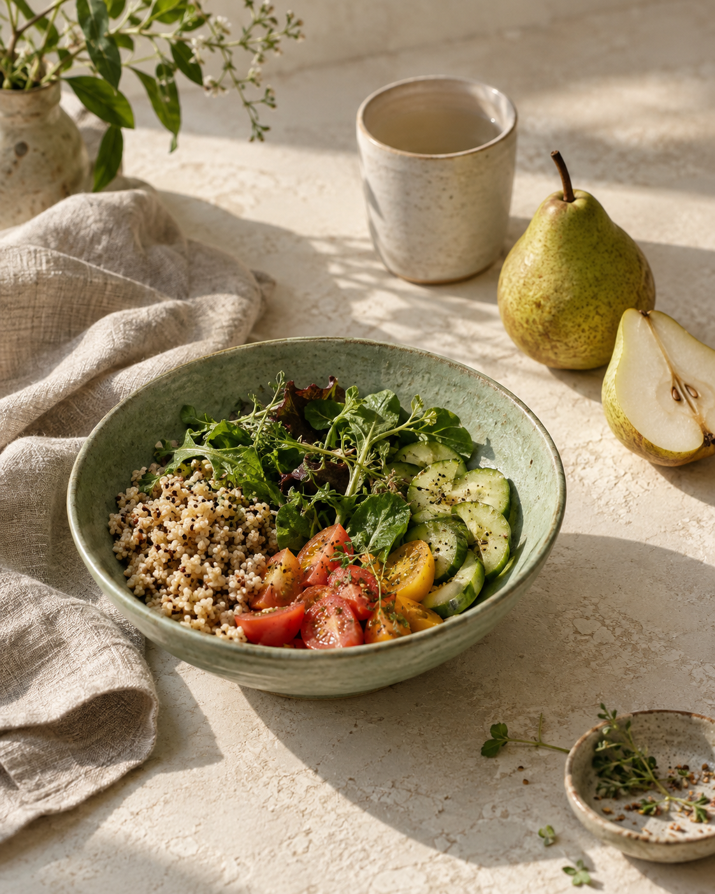

День расписан,
а обед — как получится
Встречи, дедлайны и дорога. Хочется найти удобное место для еды в своём расписании.
индивидуальная онлайн-консультация
Разберём ваши привычки и расписание, чтобы сделать повседневное питание понятнее и удобнее. Спокойно, с вниманием к вам.
Записаться на консультациюНачнём с вашей задачи. В вашем темпе.

Место для заботы о себе.
Даже в самом насыщенном дне.
узнаёте себя?
Консультация для взрослых, которым хочется организовать питание под свой реальный день.
Встречи, дедлайны и дорога. Хочется найти удобное место для еды в своём расписании.
Хочется планировать покупки проще и собирать подходящие варианты из обычных продуктов.
Нужен спокойный разговор, чтобы разобраться в привычках и выбрать, с чего начать.
Один шаг, который подходит мне.
подход к работе
У каждого свой график, бюджет, вкусы и привычки. С них и начинается разговор о питании.
Обсудим, как устроен ваш день, что уже получается и что вызывает сложности.
Наметим два-три небольших действия, которые можно попробовать в вашем ритме.
Через неделю коротко обсудим, что удалось применить и где возникли препятствия.
ваш первый шаг
Индивидуальная консультация по организации повседневного питания.
Обсудить консультациюСтоимость и условия согласуем по email до записи и оплаты.
Расписание, привычки, предпочтения и одна задача, с которой вы хотите разобраться.
Ключевые выводы встречи и два-три выполнимых действия.
Обсуждение первых шагов и возникших трудностей.
Формат посвящён бытовой организации питания. Диагностика, лечение, разбор анализов и назначение препаратов в него не входят.
всё просто
Подготовьте короткое письмо через форму ниже и отправьте его со своей почты.
Обсудим, подходит ли вам формат, стоимость и удобное время встречи.
Разберём вашу ситуацию и соберём понятные шаги для повседневной жизни.
перед знакомством
Чтобы первый шаг был спокойнее.
С повседневными задачами: как организовать питание в рабочие дни, планировать покупки или подобрать удобные варианты приёмов пищи. В письме достаточно выбрать общую тему — подробности обсудим отдельно.
Для первого обращения анализы не нужны. Можно заранее подумать, что именно неудобно в вашем текущем питании и что хотелось бы организовать по-другому. Медицинские документы по email отправлять не нужно.
Этот формат касается повседневной организации питания. Он не включает диагностику, лечение, лечебные диеты, интерпретацию анализов или назначение добавок и лекарств. Медицинские вопросы нужно обсуждать с врачом.
Стоимость, точный состав услуги и условия вы получите по email до подтверждения записи и оплаты. Отправка первого письма ни к чему вас не обязывает.
Условия переноса, отмены и возврата согласуем письменно до оплаты. Если планы изменились, напишите на тот же email, по которому договаривались о встрече.
начнём с знакомства
Запишитесь на консультацию по питанию.
Расскажите немного о своей задаче —
дальше обсудим детали по email.
Можно написать напрямую, без формы.